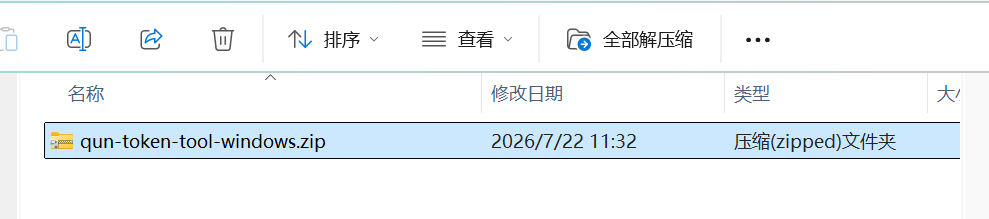
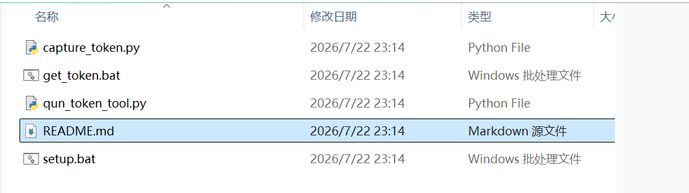
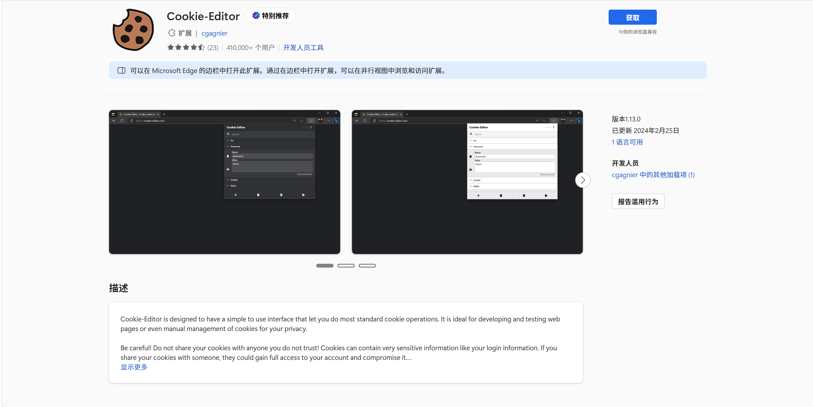
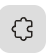
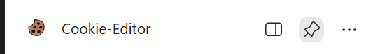
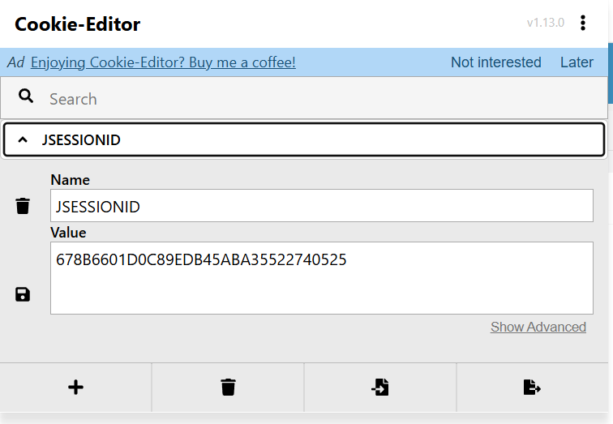

群报数 Token 和学校教务系统 Cookie 的获取方法。
通过一个小工具自动抓取 PC 微信里的群报数 Token，复制到剪贴板后直接粘贴到网站。
点击上方"下载工具包"，得到 qun-token-tool-windows.zip。

右键解压到任意文件夹。解压后包含 5 个文件，先用记事本打开 README.md 阅读。

安装 Python 3.12 或更高版本。前往 python.org 下载，安装时务必勾选 Add to PATH。
双击 setup.bat，它会自动安装 mitmproxy 并把根证书安装到当前 Windows 用户。安装成功后关闭窗口。
完全退出 PC 微信，再重新打开并登录。
双击 get_token.bat，保持命令窗口开启。在 PC 微信中打开群报数小程序，进入任意一个表单。
窗口提示成功后，Token 已复制到剪贴板。回到网站直接粘贴到上方输入框即可。
get_token.bat 获取即可。工具只读取 qun100.com 的 Authorization 请求头，不记录网页内容；成功或报错后自动恢复系统代理。
用于选课页面的 Cookie 登录方式，通过 Edge 浏览器的 Cookie-Editor 扩展获取 JSESSIONID。
建议使用 Microsoft Edge 浏览器。打开教务系统首页并登录自己的账号。
在 Edge 扩展商店搜索并安装 Cookie-Editor 扩展。

安装后，点击 Edge 右上角的扩展图标（拼图形状），把 Cookie-Editor 固定到工具栏。

回到教务系统页面，点击 Cookie-Editor 图标打开面板。

在列表中找到 JSESSIONID，展开后复制 Value 字段的值，粘贴到选课页面的 Cookie 输入框。
